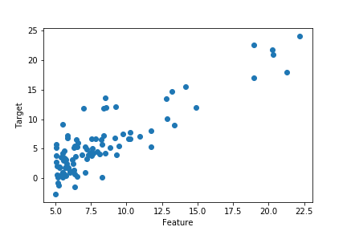

Linear Regression in One-Dimension
These notes are far from original. They are a collection of many educational videos,
common knowledge and lecture notes. Especially the lectures of Andrew Ng are the greates reference I
am
using, and the lectures I recommend for anyone to use. The dataset we are using is that of Andrew
Ng's
course on coursera.
Model Representation
In a regression problem we are going to assume that we are presented with clean data. For simplicity
and
in order to develop intuition for the future models, we will be assuming a one dimensional model.
Our data
will be about housing prices. And our data will be the price of an apartment given the square meter
area of
the apartment. The number of data we have in this case will be called training examples m.
The square
meter value will be called features x. The price will be called target y.
$$(x^{(i)},y^{(i)})$$ will be used to represent ith target and feature.

This is the scatter graph of a sample data that is good for learning linear regression. For this
data, we will come up with an hypothesis. This hypothesis will be in this case an equation of
a line! Simply we want it to fit this data as much as possible. Then we need a way to measure how
fit it is. Let a function depending on x be our hypothesis. Since it needs to be a line, it will have the form:
$$ h(x) = \theta_0 + \theta_1 x$$ where $$\theta_i$$'s are what we call parameters.In the
housing prices case, our parameter is the square area of the apartment.
Cost Function
As we said we want to find out how fit our hypothesis is. Imagine our hypothesis is a line going
through any direction of this graph. One way to do this is to look at the distance between each data
point and the corresponding point of our hypothesis line. For example if at x=30, our data has a
value y=39, and at the same x value our hypothesis has y=31, then we will consider the
distance between the two y values. But let us not work with absolute values, so we can simply work
with square of the distance instead.
Now, imagine doing this for each data point. In order to understand how fit our hypothesis is, the
total of the distances will have to be as small as possible. So we simply add all these distances'
squares. And this will be how we measure how fit our hypothesis is.
This is the idea of something very important in not only machine learning but also statistics too. It
is called the cost function. Let us now write down mathematically what we meant above. First
we substract one from the other,
$$h(x^{(i)}-y^{(i)})$$ and then we take the square so that we have a clean positive value,
$$h(x^{(i)}-y^{(i)})^2$$ Now we do this for all the data points and adding them all we will get,
$$\sum_{i=1}^{m} h(x^{(i)}-y^{(i)})^2$$ One final touch is that conventionally for mathematical
elegance we will add an unimportant factor of $$\frac{1}{2m}$$ in the beginning. Thus the final
version of the cost function is:
$$ J(\theta_0, \theta_1) = \frac{1}{2m}\sum_{i=1}^{m} h(x^{(i)}-y^{(i)})^2$$
Let us not forget the big picture. We want to minimize the cost function. Note that the value
m is the number of total data points therefore it is constant. The values of $$y^{(i)}$$ are the data
points therefore it is not a parameter. So what needs to be done is to find a pair of
$$(\theta_0,\theta_1)$$ that will minimize this function. Because these are the only values that are
not known.
Gradient Descent
In order to numerically minimize the cost function, we will use the method of gradient descent. Basic
idea is to start at one point, change it slightly to the decreasing direction; and check if it is
minimized. The formula needed is the following formula repeated until we converge to the minimum:
$$ \theta_i := \theta_i - \alpha \frac{\partial}{\partial \theta_{i}}J(\theta_0, \theta_1) $$ where
i=0,1. This formula assures that when we update, it will go into the direction of the minimum. We
need to be careful about the update. We need simultenious update of the parameters. The
way to do that is the following:
$$ temp0 = \theta_0 - \alpha \frac{\partial}{\partial \theta_0}J(\theta_0,\theta_1)$$
$$ temp1 = \theta_1 - \alpha \frac{\partial}{\partial \theta_1}J(\theta_0,\theta_1)$$
$$ \theta_0 = temp0$$
$$ \theta_1 = temp1$$
The important point about this algorithm is:
- If $$\alpha$$ is too small then the algorithm will too much time to execute.
- If $$\alpha$$ is too big then it will overjump the minimum. It will never converge.
- If the initial point of the gradient descent is in fact the minimum, then we will not
observe an update.
- As the derivative of the cost function will approach to zero, we don't need to update
the coefficient $$\alpha$$. Nonetheless, we will take smaller steps overtime.
The Explicit Calculation of the Gradient Descent
The important part that needs explicit calculation is the derivative part. Let us take the derivative of
the cost function:
$$ \frac{\partial}{\partial \theta_i}J(\theta_0,\theta_1) = \frac{\partial}{\partial \theta_i} \big[
\frac{1}{2m} \sum_{j=1}^{m} (h(x^{(j)}) - y^{(j)})^2 \big]$$ For $i=0$ we have:
$$ \frac{\partial J}{\partial \theta_0} = \frac{1}{2m} 2 \big( \sum_{j=1}^{m} (\theta_0 + \theta_1
x^{(i)} - y^{(i)}) \big)$$ For i=1 we have:
$$ \frac{\partial J}{\partial \theta_1} = \frac{1}{2m} 2 \big( \sum_{j=1}^{m} (\theta_0 + \theta_1
x^{(i)} -y^{(i)})x^{(i)} \big)$$ More compactly we will have:
$$\frac{\partial J}{\partial \theta_0} = \frac{1}{m} \sum_{j=1}^{m} (h(x^{(i)})-y^{(i)})$$
$$\frac{\partial J}{\partial \theta_1} = \frac{1}{m} \sum_{j=1}^{m} (h(x^{(i)})-y^{(i)})x^{(i)}$$
Some important remarks are:
- For linear regression, the cost function will always be convex therefore we don't need to worry about
finding the maximum instead of minimum.
- For other types of cost functions, we always need to check the convexivity first.
- This is spesifically called the batch gradient descent as we are at each step, we are
using the whole data.